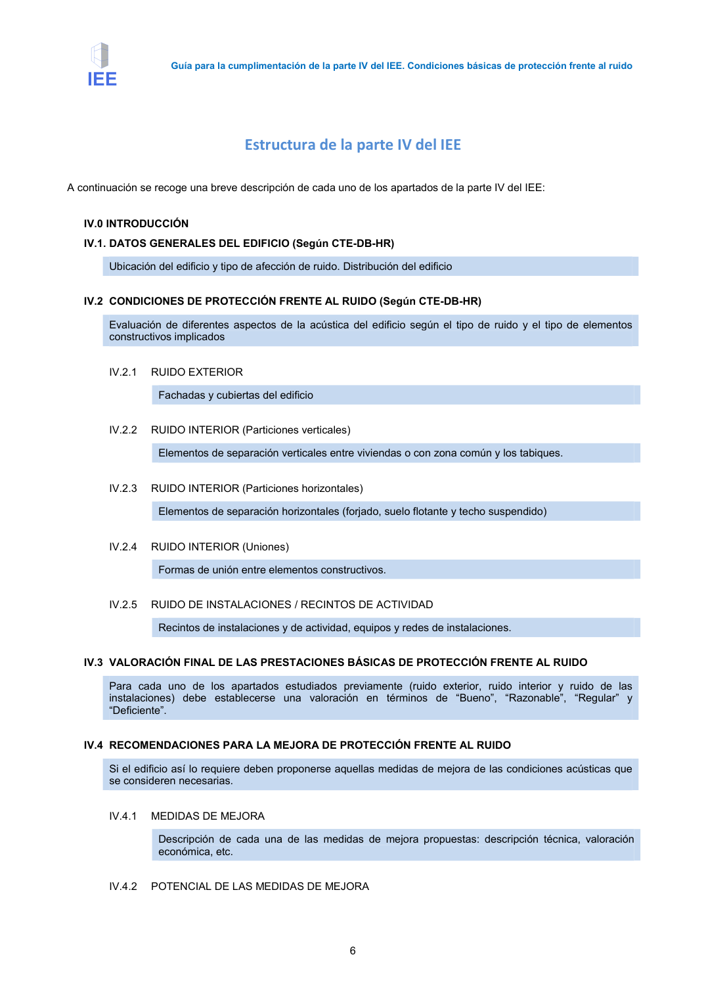
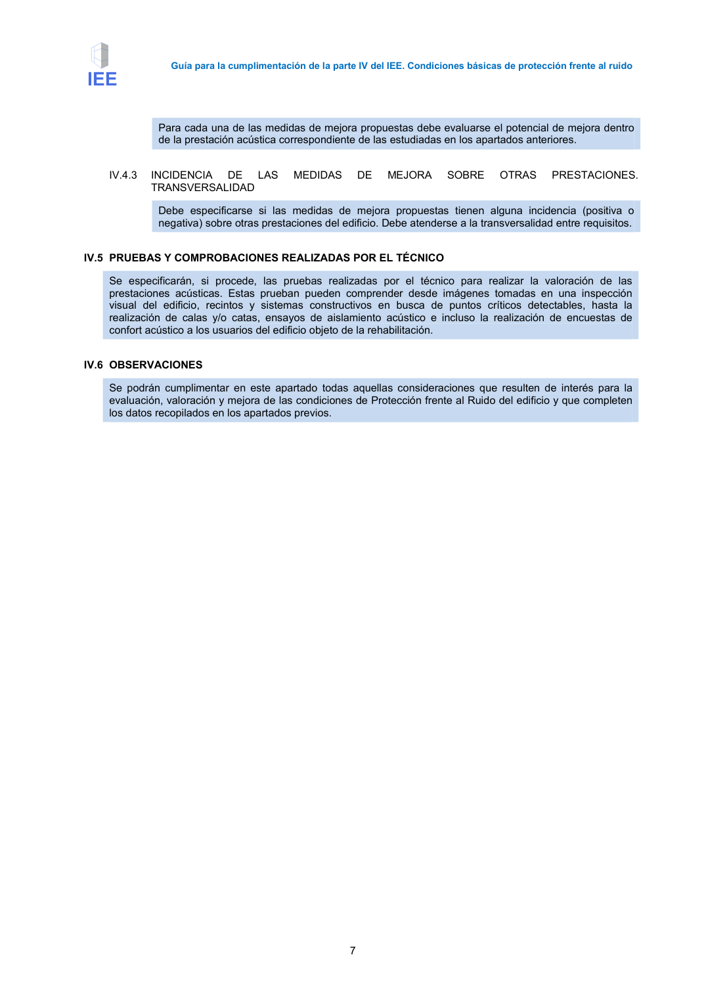
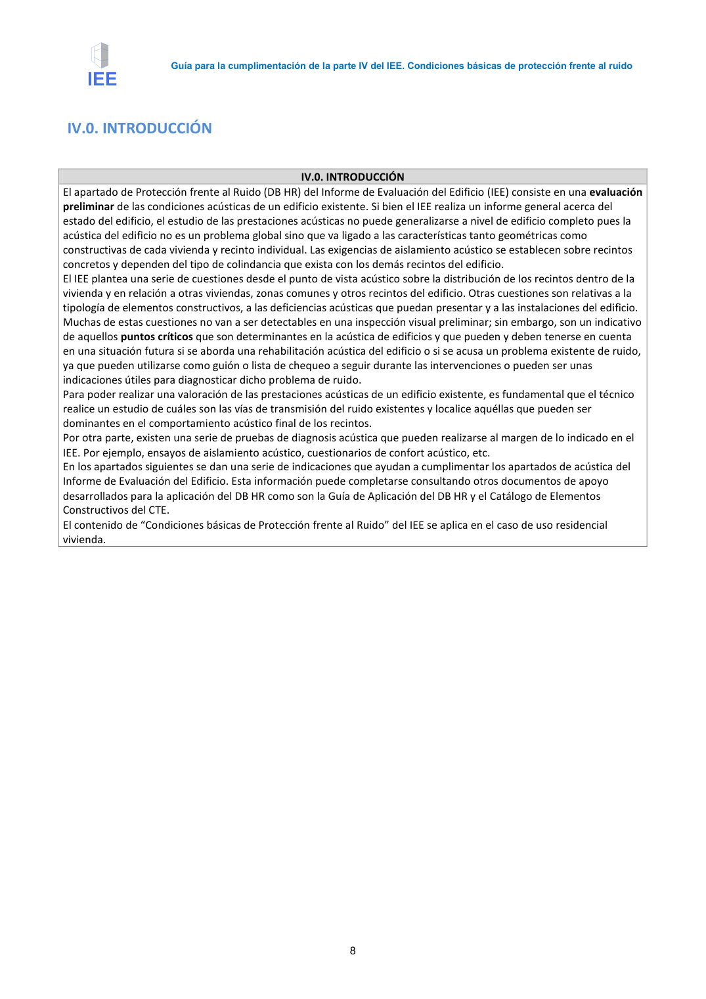

IEE 2016 · edición 2016-11-01 · capa guia
Documento GUIA-PDF-a5d4ef5252ba · SHA-256 del PDF 813669d3066c0ff79457d57b80b0512a4fbb248bc5db1f7baf473c369a064738
Copia fiel del PDF fuente · Fuente oficial
Ficha de la disposición en la fuente oficial
Créditos y autoría en el PDF fuente. Reproducción con cita de fuente y autores.
Permiso literal: Se permite la reproducción del contenido total o parcial de esta Guía siempre y cuando se haga citando la fuente original.
Guía para la cumplimentación de la parte IV del IEE. Condiciones básicas de protección frente al ruido
Dirección y coordinación
Luis Vega Catalán
Mª Cristina Colomo Fernández
Eduardo González de Prado
Dirección General de Arquitectura, Vivienda y Suelo. Ministerio de Fomento
Mª Teresa Carrascal García
Instituto de Ciencias de la Construcción Eduardo Torroja. IETcc- CSIC
Autores
Mª Teresa Carrascal García
Amelia Romero Fernández
Mª Belén Casla Herguedas
Unidad de Calidad en la Construcción del Instituto de Ciencias de la Construcción Eduardo Torroja IETcc- CSIC
Se agradece la colaboración de
Belén Delgado Giménez
Fundación FIDAS
Alberto Esteban González
C.T.O. Estudios y proyectos – Gikesa
Giovanni Muzio
C.T.O. Estudios y proyectos
Francisco Labastida Azemar
Arquitecto, asesor CSCAE
Pedro F. Nogueira López
Universidad de A Coruña
Alejandro Sansegundo Sierra
Acústica SanSegundo
Esta Guía para la cumplimentación de la parte IV del IEE. Condiciones básicas de protección frente al ruido, nace en el marco del
convenio de colaboración llevado a cabo entre el Ministerio de Fomento y el Instituto de Ciencias de la Construcción Eduardo Torroja y
forma parte de la estrategia de este Ministerio de generar una serie de documentos de ayuda que faciliten la aplicación de la normativa
de la edificación y que en este caso concreto, ofrezca a los técnicos criterios para poder realizar una evaluación del estado inicial de las
edificaciones en lo referente a las condiciones acústicas de las viviendas existentes y plantear medidas que incrementen su confort
acústico.
En la redacción de este documento se ha utilizado algunos de los contenidos y de las figuras de la Guía de aplicación del DB HR
Protección frente al ruido. Dicha guía puede consultarse en:
http://www.codigotecnico.org/index.php/menu-documentos-complementarios/menu-guia-aplicacion-db-hr
Se permite la reproducción del contenido total o parcial de esta Guía siempre y cuando se haga citando la fuente original.
2Formatos: JSON del segmento · Markdown
Estructura de la parte IV del IEE A continuación se recoge una breve descripción de cada uno de los apartados de la parte IV del IEE: IV.0 INTRODUCCIÓN IV.1. DATOS GENERALES DEL EDIFICIO (Según CTE-DB-HR) Ubicación del edificio y tipo de afección de ruido. Distribución del edificio IV.2 CONDICIONES DE PROTECCIÓN FRENTE AL RUIDO (Según CTE-DB-HR) Evaluación de diferentes aspectos de la acústica del edificio según el tipo de ruido y el tipo de elementos constructivos implicados IV.2.1 RUIDO EXTERIOR Fachadas y cubiertas del edificio IV.2.2 RUIDO INTERIOR (Particiones verticales) Elementos de separación verticales entre viviendas o con zona común y los tabiques. IV.2.3 RUIDO INTERIOR (Particiones horizontales) Elementos de separación horizontales (forjado, suelo flotante y techo suspendido) IV.2.4 RUIDO INTERIOR (Uniones) Formas de unión entre elementos constructivos. IV.2.5 RUIDO DE INSTALACIONES / RECINTOS DE ACTIVIDAD Recintos de instalaciones y de actividad, equipos y redes de instalaciones. IV.3 VALORACIÓN FINAL DE LAS PRESTACIONES BÁSICAS DE PROTECCIÓN FRENTE AL RUIDO Para cada uno de los apartados estudiados previamente (ruido exterior, ruido interior y ruido de las instalaciones) debe establecerse una valoración en términos de “Bueno”, “Razonable”, “Regular” y “Deficiente”. IV.4 RECOMENDACIONES PARA LA MEJORA DE PROTECCIÓN FRENTE AL RUIDO Si el edificio así lo requiere deben proponerse aquellas medidas de mejora de las condiciones acústicas que se consideren necesarias. IV.4.1 MEDIDAS DE MEJORA Descripción de cada una de las medidas de mejora propuestas: descripción técnica, valoración económica, etc. IV.4.2 POTENCIAL DE LAS MEDIDAS DE MEJORA Guía para la cumplimentación de la parte IV del IEE. Condiciones básicas de protección frente al ruido 7 Para cada una de las medidas de mejora propuestas debe evaluarse el potencial de mejora dentro de la prestación acústica correspondiente de las estudiadas en los apartados anteriores. IV.4.3 INCIDENCIA DE LAS MEDIDAS DE MEJORA SOBRE OTRAS PRESTACIONES. TRANSVERSALIDAD Debe especificarse si las medidas de mejora propuestas tienen alguna incidencia (positiva o negativa) sobre otras prestaciones del edificio. Debe atenderse a la transversalidad entre requisitos. IV.5 PRUEBAS Y COMPROBACIONES REALIZADAS POR EL TÉCNICO Se especificarán, si procede, las pruebas realizadas por el técnico para realizar la valoración de las prestaciones acústicas. Estas prueban pueden comprender desde imágenes tomadas en una inspección visual del edificio, recintos y sistemas constructivos en busca de puntos críticos detectables, hasta la realización de calas y/o catas, ensayos de aislamiento acústico e incluso la realización de encuestas de confort acústico a los usuarios del edificio objeto de la rehabilitación. IV.6 OBSERVACIONES Se podrán cumplimentar en este apartado todas aquellas consideraciones que resulten de interés para la evaluación, valoración y mejora de las condiciones de Protección frente al Ruido del edificio y que completen los datos recopilados en los apartados previos. Guía para la cumplimentación de la parte IV del IEE. Condiciones básicas de protección frente al ruido 8


